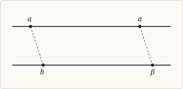
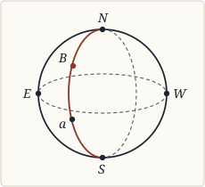
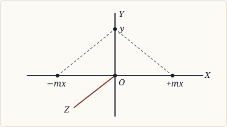

Lotze’s Mathematical Misunderstandings of Metageometry¶
Critical Account of Previous Philosophical Theories — Lotze (§§ 90–97, pp. 98–110)
§ 90. (2) He attacks the mathematical procedure of Metageometry¶
f. §90 · p. 9890. Lotze’s attack on Metageometry—although it remains, so far as I know, the best hostile criticism extant, and although its arguments have become part of the regular stock-in-trade of Euclidean philosophers—contains, if I am not mistaken, several misunderstandings due to insufficient mathematical knowledge of the subject. As these misunderstandings have been widely spread among philosophers, and cannot be easily removed except by a critic who has gone into non-Euclidean Geometry with some care, it seems desirable to discuss Lotze’s strictures point by point.

Fig. 3 (p. 99, § 91) — Lotze’s definition of parallel straight lines $a\alpha$ and $b\beta$.¶
§ 91. The attack begins with a question-begging definition of parallels¶
f. §91 · p. 9991. The mathematical criticism begins (§ 131) with a somewhat question-begging definition of parallel straight lines. Two straight lines aα, bβ, according to this definition, are parallel when—a and b being arbitrary points on the two lines—if aα = bβ, then ab = αβ, where α, β are two other points on the two straight lines respectively. This definition—which contains Euclid’s axiom and definition combined in a very convenient and enticing form—is of course thoroughly suitable to Euclidean Geometry, and leads immediately to all the Euclidean propositions about parallels. But it is perhaps more honest to follow Euclid’s course; when an axiom is thus buried in a definition, it is apt to seem, since definitions are supposed to be arbitrary, as though the difficulty had been overcome, while in reality, the possibility of parallels, as above defined, involves the very point in question, namely, the disputed axiom of parallels. For what this axiom asserts is simply the existence of lines conforming to Lotze’s definition. The deduction of the principal propositions on parallels, with which Lotze follows up his definition, is of course a very simple proceeding—a proceeding, however, in which the first step begs the question.
§ 92. Lotze maintains that all apparent departures from Euclid could be physically explained, a view which really makes Euclid empirical¶
f. §92 · p. 9992. The next argument for the apriority of Euclidean Geometry has, oddly enough, an exactly opposite bearing, although it is a great favourite with opponents of Metageometry. Measurements of stellar triangles, and all similar attempts at an empirical determination of the space-constant are, according to Lotze, beside the mark; for any observed departure from two right angles, or any finite annual parallax for distant stars, would be attributed to some new kind of refraction, or, as in the case of aberration, to some other physical cause, and never to the geometrical nature of space. This is a strong argument for the empirical validity of Euclid, but as an argument for the apodeictic certainty of the orthodox system, it has an opposite tendency. For observations of the kind contemplated would have to be due to departures from Euclidean straightness, hitherto unknown, on the part of stellar light-rays. Such departure could, in certain cases, be accounted for by a finite space-constant, but it could also, probably, be accounted for by a change in Optics, for example, by attributing refractive properties to the ether. Such properties could only exist if ether were of varying density, if (say) it were denser in the neighbourhood of any of the heavenly bodies. But such an assumption would, I believe, destroy the utility of ether for Physics; a slight alteration in our Geometry, so slight as not appreciably to affect distances within the Solar System, would probably be in the end, therefore, should such errors ever be discovered, a simpler explanation than any that Physics could offer. But this is not the point of my contention. The point is that, if the physical explanation, as Lotze holds, be possible in the above case, the converse must also hold: it must be possible to explain the present phenomena by supposing ether refractive and space non-Euclidean. From this conclusion there is no escape. If every conceivable behaviour of light-rays can be explained, within Euclid, by physical causes, it must also be possible, by a suitable choice of hypothetical physical causes, to explain the actual phenomena as belonging to a non-Euclidean space. Such a hypothesis would be rightly rejected by Science, for the present, on account of its unnecessary complexity. Nevertheless it would remain, for philosophy, a possibility to be reckoned with, and the choice could only be decided upon empirical grounds of simplicity. It may well be doubted whether, in the world we know, the phenomena could be attributed to a distinctly non-Euclidean space, but this conclusion follows inevitably from the contention that no phenomena could force us to assume such a space. Lotze’s argument, therefore, if pushed home, disproves his own view, and puts Euclidean space, as an empirical explanation of phenomena, on a level with luminiferous ether [1].
§ 93. His criticism of Helmholtz’s analogies rests wholly on mathematical mistakes¶
f. §93 · p. 10193. Lotze now proceeds (§ 132) to a detailed criticism of Helmholtz, whom he regards as a typical exponent of Metageometry. It is possible that, at the time when he wrote, Helmholtz really did occupy this position; but it is unfortunate that, in the minds of philosophers, he should still continue to do so, after the very material advances brought about by the projective treatment of the subject. It is also unfortunate that his somewhat careless attempts to popularise mathematical results have so often been disposed of, without due attention to his more technical and solid contributions. Thus his romances about Flatland and Sphereland—at best only fairy-tale analogies of doubtful value—have been attacked as if they formed an essential feature of Metageometry.
But to proceed to particulars: Lotze readily allows that the Flatlanders would set up Plane Geometry, as we know it, but refuses to admit that the Spherelanders could, without inferring the third dimension, set up a two-dimensional spherical Geometry which should be free from contradictions. I will endeavour to give a free rendering of Lotze’s argument on this point.

Fig. 4 (p. 101, § 93) — Lotze’s Sphereland great circles: poles $N, S$, equator $EW$, and meridian $NBS$.¶
Suppose, he says, a north and south pole, N and S, arbitrarily fixed, and an equator EW. Suppose a being, B, capable of impressions only from things on the surface of the sphere, to move in a meridian NBS. Let B start from some point a, and finally, after describing a great circle, return to the same point a. If a is known only by the quality of the impression it makes on B, B may imagine he has not reached the same point a, but another similar point a′, bearing a relation to a similar to that of the octave in singing: he might even not arrange his impressions spatially at all. In order that this may occur, we require the further assumption, that every difference in the above-mentioned feelings (as he describes the meridian) may be presented as a spatial distance between two places. Even now, B may think he is describing a Euclidean straight line, containing similar points at certain intervals. Allowing, however, that he realizes the identity of a with his initial position, he will now seem, by motion in a straight line, to have returned to the point from which he started, for his motion cannot, without the third dimension, seem to him other than rectilinear.
Up to this point, there seems little ground for objection, except, perhaps, to the idea of a straight line with periodical similar points—if B were as philosophical as, in these discussions, we usually suppose him to be, he would probably object to this interpretation of his experiences, on the ground that it regards empty space as something independent of the objects in it. It is worth pointing out, also, that B would not need to describe the whole circle, in order suddenly to find himself home again with his old friends. Accurate measurements of small triangles would suffice to determine his space-constant, and show him the length of a great circle (or straight line, as he would call it). We must admit, also, that so hypothetical a being as B might form no space-intuition at all, but as he is introduced solely for the purposes of the analogy, it is convenient to allow him all possible qualifications for his post. But these points do not touch the kernel of the argument, which lies in the statement that such a straight line, returning into itself after a finite time, would appear to B as an “unendurable contradiction,” and thus force him, for logical though not for sensational purposes, into the assumption of a third dimension. This assertion seems to me quite unwarranted: the whole of Metageometry is a solid array in disproof of it. Helmholtz’s argument is, it must be remembered, only an analogy, and the contradiction would exist only for a Euclidean. A complete three-dimensional Geometry has, we have seen in Chapter I., been developed on the assumption that straight lines are of finite length. A constant value for the measure of curvature, as our discussion of Riemann showed, involves neither reference to the fourth dimension, nor any kind of internal contradiction. This fact disproves Lotze’s contention, which arises solely from inability to divest his imagination of Euclidean ideas.
Lotze next attacks Helmholtz for the assertion that B would know nothing of parallel lines—parallel straight lines, as the context shows, he meant to say [2]. Lotze, however, takes him as meaning, apparently, mere curves of constant distance from a given straight line, which are part of the regular stock-in-trade of Metageometry. Parallels of latitude, in the geographical sense, would not—with the exception of the equator—appear to B as straight lines, but as circles. Great circles he would call straight, and this fact seems to have misled Lotze into thinking all circles were to be treated as straight lines. Parallels of latitude, therefore, though B might call them parallels, would not invalidate Helmholtz’s contention, which applies only to straight lines.
The argument that such small circles would be parallel, which we have just disposed of, is only the preface to another proof that B would need a third dimension. Let us call two of these parallels of latitude $l_{n}$ and $l_{s}$, and let them be equidistant from the equator, one in the northern, one in the southern hemisphere. Consecutive tangent planes, along these parallels, converge, in the one case northwards, in the other southwards. Either B could become aware of their difference, says Lotze, or he could not. In the former case, which he regards as the more probable, he easily proves that B would infer a third dimension. But this alternative is, I think, wholly inadmissible. Tangent planes, like Euclidean planes in general, would have no meaning to B; unless, indeed, he were a metageometrician, which, with all his metaphysical and mathematical subtlety, the argument supposes him not to be—and to such a supposition Lotze, surely, is the last person who has a right to object. Lotze’s attempted proof that this is the right alternative rests, if I understand him aright, on a sheer error in ordinary spherical Geometry. B would observe, he says, that the meridians made smaller angles with his path towards the nearer than towards the further pole—as a matter of fact, they would be simply perpendicular to his path in both directions. What Lotze means is, perhaps, that all the meridians would meet sooner in one direction than in the other, and this, of course, is true. But the poles, in which the meridians meet, would appear to B as the centres of the respective parallels, while the parallels themselves would appear to be circles. Now I am at a loss to see what difficulty would arise, to B, in supposing two different circles to have different centres [3]. We must, therefore, take the first alternative, that B would have no sort of knowledge as to the direction in which the tangent planes converged. Here Lotze attempts, if I have not misunderstood him, to prove a reductio ad absurdum: B would think, he says, that he was describing two paths wholly the same in direction, and then he might regard both paths as circles in a plane. It may be observed that direction, when applied to a circle as a whole, is meaningless; indeed direction, in all Metageometry, can only mean, even when applied to straight lines, direction towards a point. To speak of two lines, which do not meet, as having the same direction, is a surreptitious introduction of the axiom of parallels. Apart from this, I cannot conceive any objection, on B‘s part, to such a view—one should say must, not might. The whole argumentation, therefore, unless its obscurity has led me astray, must be pronounced fruitless and inconclusive.
§ 94. His proof that space must have three dimensions rests on neglect of different orders of infinity¶
f. §94 · p. 10494. After this preliminary discussion of Sphereland, Lotze proceeds to the question of a fourth dimension, and thence to spherical and pseudo-spherical space. As before, he appears to know only the more careless and popular utterances of Helmholtz and Riemann, and to have taken no trouble to understand even the foundations of mathematical Metageometry. By this neglect, much of what he says is rendered wholly worthless. To begin with, he regards, as the purpose of Helmholtz’s fairy tale, the suggestion of a possible fourth dimension, whereas the real purpose was quite the opposite—to make intelligible a purely three-dimensional non-Euclidean space. Helmholtz introduced Flatland only because its relation to Sphereland is analogous to the relation of ours to spherical space [4]. But Lotze says: The Flatlanders would find no difficulty in a third dimension, since it would in no way contradict their own Geometry, while the people in Sphereland, from the contradictions in their two-dimensional system, would already have been led to it. The latter contention I have already tried to answer; the former has an odd sound, in view of the attempt, a few pages later, to prove à priori that all forms of intuition, in any way analogous to space, must have three dimensions. One cannot help suspecting that the Flatlanders, with two instead of three dimensions, would make a similar attempt. But to return to Lotze’s argument: Neither analogy can be used, he says, to prove that we ought perhaps to set up a fourth dimension, since, for us, no contradictions or otherwise inexplicable phenomena exist. The only people, so far as I know, who have used this analogy, are Dr Abbot and a few Spiritualists—the former in joke, the latter to explain certain phenomena more simply explained, perhaps, by Maskelyne and Cooke. But although Lotze’s conclusion in this matter is sound, and one with which Helmholtz might have agreed, his arguments, to my mind, are irrelevant and unconvincing. There is this difference, he says, between us and the Spherelanders: the latter were logically forced to a new dimension, and found it possible; we are not forced to it, and find it, in our space, impossible. I have contended that, on the contrary, nothing would force the Spherelanders to assume a third dimension, while they would find it impossible exactly as we find a fourth impossible—not logically, that is to say, but only as a presentable construction in given space.
After a somewhat elephantine piece of humour, about socialistic whales in a four-dimensional sea of Fourrier’s eau sucrée, Lotze proceeds to a proof, by logic, that every form of intuition, which embraces the whole system of ordered relations of a coexisting manifold, must have three dimensions. One might object, on à priori grounds, to any such attempt: what belongs to pure intuition could hardly, one would have thought, be determined by à priori reasoning [5]. I will not, however, develop this argument here, but endeavour to point out, as far as its obscurity will allow, the particular fallacy of the proof in question.

Fig. 5 (p. 106, § 95) — Concentric spheres and rays meeting at acute angle $O$ in Lotze’s coordinate reconstruction.¶
Lotze’s argument is as follows. In this discussion, though our terminology is necessarily taken from space, we are really concerned with a much more general conception. We assume, in order to preserve the homogeneity of dimensions, that the difference (distance) between any two elements (points) of our manifold—to borrow Riemann’s word—is of the same kind as, and commensurable with, the difference between any other two elements. Let us take a series of elements at successive distances x such that the distance between any two is the sum of the distances between intermediate elements. Such a series corresponds to a straight line, which is taken as the x-axis. Then a series OY is called perpendicular to the x-axis OX, when the distances of any element y, on OY, from +mx and -mx are equal. By our hypothesis, these distances are comparable with, and qualitatively similar to, x and y. So long as OY is defined only by relation to OX, it is conceptually unique. But now let us suppose the same relation as that between OX and OY, to be possible between OY and a new series OZ; we then get a third series OZ perpendicular to OY, and again conceptually unique, so long as it is defined by relation to OY alone. We might proceed, in the same way, to a fourth line OU perpendicular to OZ. But it is necessary, for our purposes, that OZ should be perpendicular to OX as well as OY. Without this condition, OZ might extend into another world, and have no corresponding relation to OX—this is a possibility only excluded by our unavoidable spatial images. At this point comes the crux of the argument. That OZ, says Lotze, which, besides being perpendicular to OY, is also perpendicular to OX, must be among the series of OY‘s, for these were defined only by perpendicularity to OX. Hence, he concludes, there can only be even a third dimension if OZ coincides with one, and—as soon as OX is considered fixed—with only one, of the many members of the OY series.
In this argument it is difficult—to me at any rate—to see any force at all. The only way I can account for it is, to suppose that Lotze has neglected the possibility of any but single infinities. On this interpretation, the argument might be stated thus: There is an infinite series of continuously varying OY‘s; to the common property of these, we add another property, which will divide their total number by infinity. The remaining OZ, therefore, must be uniquely determined. The same form of argument, however, would prove that two surfaces can only cut one another in a single point, and numberless other absurdities. The fact is, that infinities may be of different orders. For example, the number of points in a line may be taken as a single infinity, and so may the number of lines in a plane through any point; hence, by multiplication, the number of points in a plane is a double infinity, $\infty^{2}$, and if we divide this number by a single infinity, we get still an infinite number left. Thus Lotze’s argument assumes what he has to prove, that the number of lines perpendicular to a given line, through any point, is a single infinity, which is equivalent to the axiom of three dimensions. The whole passage is so obscure, that its meaning may have escaped me. It is obvious à priori, however, as I pointed out in the beginning, that any proof of the axiom must be fallacious somewhere, and the above interpretation of the argument is the only one I have been able to find.
§ 95. He attacks non-Euclidean spaces on the mistaken ground that they are not homogeneous¶
f. §95 · p. 10795. The rest of the Chapter is devoted to an attack on spherical and pseudo-spherical space, on the ground that they interfere with the homogeneity of the three dimensions, and with the similarity of all parts of space. This is simply false. Such spaces, like the surface of a sphere, are exactly alike throughout. Lotze shows, here and elsewhere, that he has not taken the pains to find out what Metageometry really is. I hold myself, and have tried to prove in this Essay, that Congruence is an à priori axiom, without which Geometry would be impossible; but the wish to uphold this axiom is, as Lotze ought to have known, the precise motive which led Metageometry to limit itself to spaces of constant measure of curvature. We see here the importance of distinguishing between Helmholtz the philosopher and Helmholtz the mathematician. Though the philosopher wished to dispense with Congruence, the mathematician, as we saw in Chapter I., retained and strongly emphasized it. A little later Lotze shows, again, how he has been misled by the unfortunate analogy of Sphereland. A spherical surface, he says, he can understand; but how are we to pass from this to a spherical space? Either this surface is the whole of our space, as in Sphereland, or it generates space by a gradually growing radius. Such concentric spheres, as Lotze triumphantly points out, of course generate Euclidean space. His disjunction, however, is utterly and entirely false, and could never have been suggested by any one with even a superficial knowledge of Metageometry. This point is less laboured than the former, which, in all its nakedness, is thus re-stated in the last sentence of the Chapter: “I cannot persuade myself that one could, without the elements of homogeneous space, even form or define the presentation of heterogeneous spaces, or of such as had variable measures of curvature.” As though such spaces were ever set up by non-Euclidean mathematics!
In conclusion, Lotze expresses a hope that Philosophy, on this point, will not allow itself to be imposed upon by Mathematics. I must, instead, rejoice that Mathematics has not been imposed upon by Philosophy, but has developed freely an important and self-consistent system, which deserves, for its subtle analysis into logical and factual elements, the gratitude of all who seek for a philosophy of space.
§ 96. Lotze’s objections fall under four heads¶
f. §96 · p. 10896. The objections to non-Euclidean Geometry which have just been discussed fall under four heads:
Non-Euclidean spaces are not homogeneous; Metageometry therefore unduly reifies space.
They involve a reference to a fourth dimension.
They cannot be set up without an implicit reference to Euclidean space, or to the Euclidean straight line, on which they are therefore dependent.
They are self-contradictory in one or more ways.
The reader who has followed me in regarding these four objections as fallacious, will have no difficulty in disposing of any other critic of Metageometry, as these are the only mathematical arguments, so far as I know, ever urged against non-Euclideans [6]. The logical validity of Metageometry, and the mathematical possibility of three-dimensional non-Euclidean spaces, will therefore be regarded, throughout the remainder of the work, as sufficiently established.
§ 97. Two other semi-philosophical objections may be urged,¶
f. §97 · p. 10997. Two other objections may, indeed, be urged against Metageometry, but these are rather of a philosophical than of a strictly mathematical import. The first of these, which has been made the base of operations by Delbœuf, applies equally to all non-Euclidean spaces. The second, which has not, so far as I know, been much employed, but yet seems to me deserving of notice, bears directly against spaces of positive curvature alone; but if it could discredit these, it might throw doubt on the method by which all alike are obtained. The two objections are:
Space must be such as to allow of similarity, i.e. of the increase or diminution, in a constant ratio, of all the lines in a figure, without change of angles; whereas in non-Euclid, lines, like angles, have absolute magnitude.
Space must be infinite, whereas spherical and elliptic spaces are finite.
I will discuss the first objection in connection with Delbœuf’s articles referred to above. The second, which has not, to my knowledge, been widely used in criticism, will be better deferred to Chapter III.
Delbœuf.¶
Footnotes